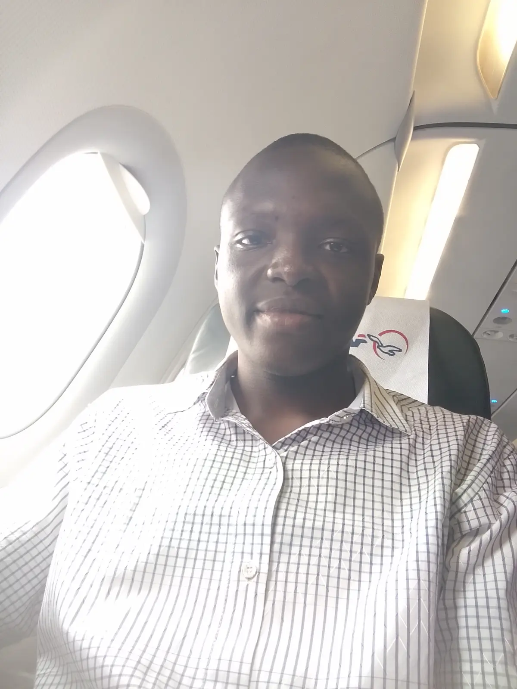
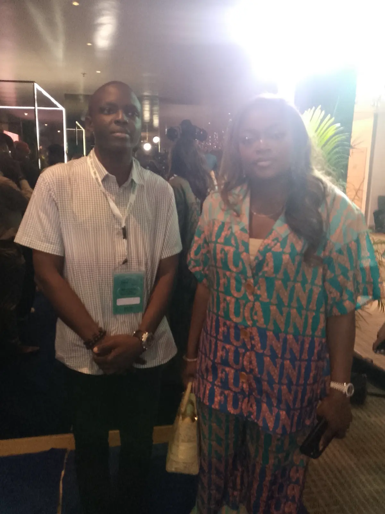
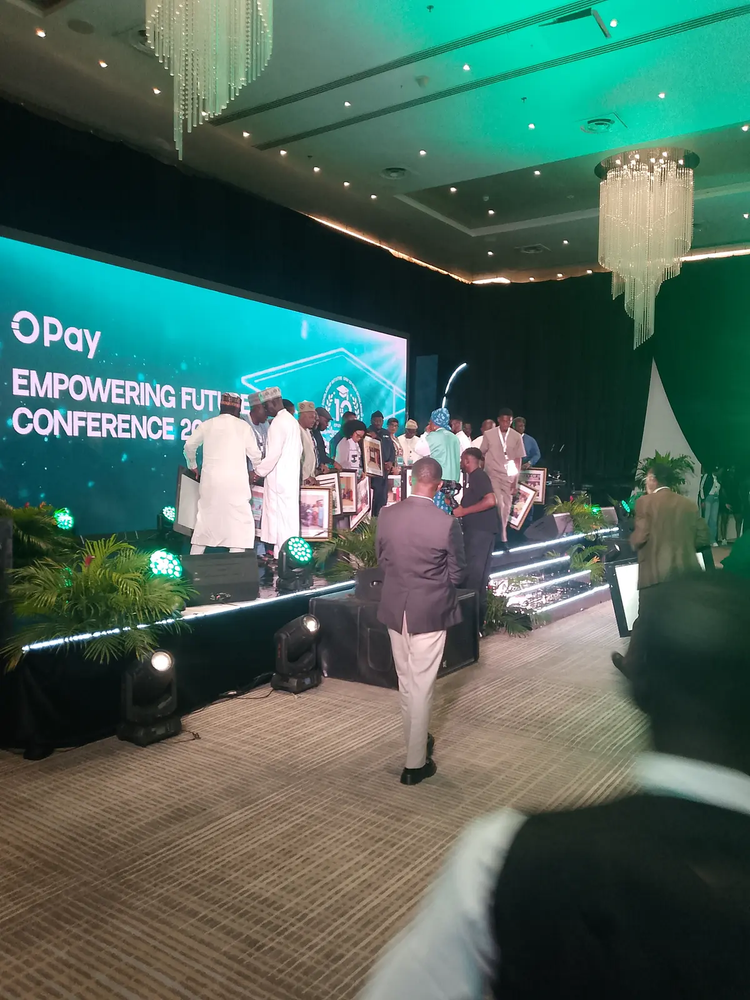

2026 • Present
Engineering Intern Insight Works, Ibadan
Researching 48V DC telecom power, advancing PLC and ESP32 capability, and contributing to an automated broiler cage monitoring platform.
 Ayoola Timilehin Israel
Ayoola Timilehin Israel
Experience
Engineering practice, training, facilitation and programme leadership shaped by real responsibilities and measurable outcomes.
Researching 48V DC telecom power, advancing PLC and ESP32 capability, and contributing to an automated broiler cage monitoring platform.
Led a 23 member cohort through six leadership sessions and SDG aligned projects, including a Global Goals Classroom reaching more than 100 students.
Progressed from Opportunity Coordinator to Programme Manager and Programmes Lead, coordinating practical learning and career initiatives for a community of more than 950 members.
Delivered practical AI, digital safety and emerging technology learning to students and young women.

Field note • IEEE Career Connect
Helped shape a career development experience for more than 200 students, connecting technical learning with decisions, networks and confidence beyond the classroom.



FUT Minna representative • OPay
Represented the Federal University of Technology, Minna during the OPay trip and conference, engaging with other participants around innovation, opportunity and student development.

